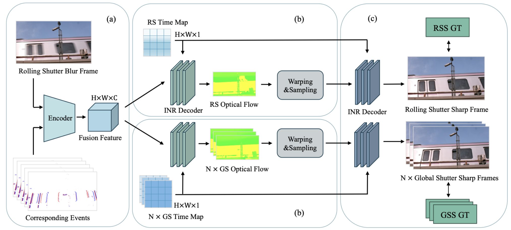

EMARS: Event-based Motion-Aware Correction, Deblurring and Interpolation of Rolling Shutter Images
2026 IEEE International Conference on Image Processing (ICIP)
†Keio University ††NEC
{hwx2955, bohanhuang07}@keio.jp, {s-namiki, yogino, t-toizumi-ct, ito-atsushi}@nec.com, aoki@elec.keio.ac.jp

Abstract
RS-CMOS sensors suffer from distortions and blur, which event-based Implicit Neural Representations (INR) often fail to resolve due to motion information loss. We propose a flow-centric unified framework that explicitly utilizes time-conditional optical flow as the primary kinematic constraint. By integrating a Flow-Constrained INR, our model ensures physically consistent motion trajectories for simultaneous RS correction, deblurring, and arbitrary-rate interpolation. Experiments demonstrate that our method achieves state-of-the-art performance across all benchmarks.
Visualization
BibTeX
@inproceedings{hu2026emars,
title={Emars: Event-Based Motion-Aware Correction, Deblurring and Interpolation of Rolling Shutter Images},
author={Weixiang Hu and Bohan Huang and Shigeaki Namiki and Yuka Ogino and Takahiro Toizumi and Atsushi Ito and Yoshimitsu Aoki},
booktitle={2026 IEEE International Conference on Image Processing (ICIP)},
year={2026}
}